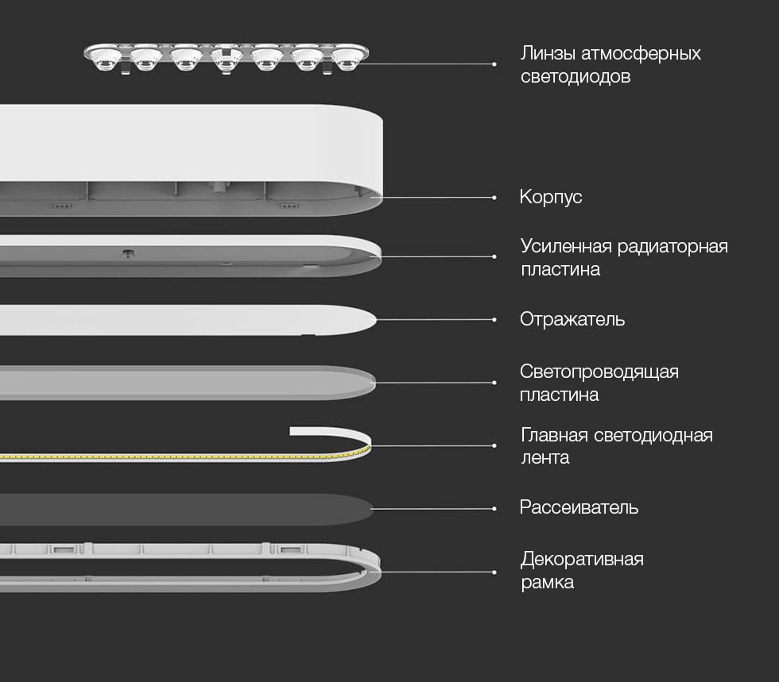

<div class="row pendant">
    <div class="col-xs-12 col-sm-12 col-md-10 col-md-offset-1 col-lg-8 col-lg-offset-2 content">

        <section class="row pendant_content_1">
            <div class="col-xs-12 col-sm-6 col-md-6 col-lg-6">
                <div class="text">
                    <h1>Yeelight Crystal Pendant Lamp</h1>
                    <h2>Интелектуальное освещение с&nbsp;натуральным светом</h2>
                    <p>Регулировка цветовой температуры и&nbsp;яркости| Голосовое управление | Атмосферный свет |
                        Реалистичные цвета</p>
                </div>
            </div>
            <div class="col-xs-12 col-sm-6 col-md-6 col-lg-6">
                
            </div>
        </section>

        <section class="row pendant_content_2">
            <div class="col-xs-12 col-sm-12 col-md-6 col-md-push-6 col-lg-6 col-lg-push-6" style="padding: 0">
                <div class="text">
                    <h2>Соберите близких за&nbsp;столом с&nbsp;атмосферным светом</h2>
                    <p>Подвесной светильник Yeelight серии Pendant отличается элегантным и утонченным дизайном,
                        помогающим ему вписаться над любым столом и в любом интерьере.</p>
                    <p>280 светодиодов с продуманным расположением испускают мягкий и равномерный свет. Особое световое
                        кольцо создаст самую подходящую атмосферу для семейного или романтичного ужина.</p>
                </div>
            </div>
            <div class="col-xs-12 col-sm-12 col-md-6 col-md-pull-6 col-lg-6 col-lg-pull-6"
                style="padding: 0; font-size: 0;">
                </div>
        </section>


        <section class="row pendant_content_3">
            <div class="col-xs-12 col-sm-12 col-md-6 col-lg-6" style="padding: 0">
                <div class="text">
                    <h2>280 светодиодов</h2>
                    <p>Продуманная до мельчайших деталей конструкция содержит 280 светодиодов с линзами для максимальной
                        светоотдачи. Для более эффективного освещения в корпусе так-же расположены пластины отражателя и
                        рассеивателя.</p>
                    <p>Для эффективного отвода тепла от лампы в корпусе предусмотрена радиаторная пластина. Благодаря
                        этому заметно увеличивается срок службы Yeelight Pendant</p>
                </div>
            </div>
            <div class="col-xs-12 col-sm-12 col-md-6 col-lg-6" style="padding: 0; font-size: 0;"></div>
        </section>

        <section class="row pendant_content_2">
            <div class="col-xs-12 col-sm-12 col-md-6 col-md-push-6 col-lg-6 col-lg-push-6" style="padding: 0">
                <div class="text">
                    <h2>Регулировка температуры и&nbsp;яркости</h2>
                    <p>Регулировка температуры и яркости света позволяет подобрать оптимальное освещение под каждое
                        застолье. Создайте теплую уютную атмосферу за столом, когда за окном зима, или добавьте немного
                        ощущения прохлады в жаркий летний день!</p>
                    <p>Восхитительный атмосферный цвет сделает каждый ужин отдельной церемонией. Будь то праздничный
                        обед для большой семьи или романтичный ужин для двоих, правильное освещение создаст ту самую
                        атмосферу, в которой можно насладиться и едой, и компанией.</p>
                </div>
            </div>
            <div class="col-xs-12 col-sm-12 col-md-6 col-md-pull-6 col-lg-6 col-lg-pull-6"
                style="padding: 0; font-size: 0;">
                </div>
        </section>

        <section class="row pendant_content_4">
            <div class="col-xs-12 col-sm-12 col-md-12 col-lg-12 align-center" style="padding: 0;">
                
                <div class="text">
                    <h2>Стильная обеденная зона</h2>
                    <p>Светильник Yeelight Pendant выполнен в лучших традициях скандинавского минимализма. Его длина —
                        90 см. Для того чтобы избавить лампу от лишних элементов и упростить ее монтаж, трансформатор
                        питания встроен прямо в корпус. В скромных внешних чертах Yeelight Pendant воплощается широкая
                        функциональность, создающая неповторимый образ.</p>
                </div>
            </div>
        </section>

        <section class="row pendant_content_7">
            <div class="col-xs-12 col-sm-6 col-sm-push-6 col-md-push-6 col-md-6 col-lg-6 col-lg-push-6"
                style="padding: 0; font-size: 0;"></div>
            <div class="col-xs-12 col-sm-6 col-sm-pull-6 col-md-6 col-md-pull-6 col-lg-6 col-lg-pull-6"
                style="padding: 0">
                <div class="text">
                    <h2>Защита от пыли и&nbsp;насекомых</h2>
                    <p>Антимоскитный дизайн Yeelight Pendant обеспечивает плотную герметизацию, а также предотвращает
                        попадание пыли и насекомых внутрь лампы. Благодаря этому во время уборки вы можете забыть о
                        светильнике.</p>
                </div>
            </div>
        </section>

        <section class="row pendant_content_11">
            <div class="col-sm-12 col-md-12 col-lg-12">
                
                <table class="table">
                    <thead>
                        <tr>
                            <th colspan="2">Характеристики</th>
                        </tr>
                    </thead>
                    <tbody>
                        <tr>
                            <td>Модель</td>
                            <td>YLDL01YL</td>
                        </tr>
                        <tr>
                            <td>Цвет</td>
                            <td>белый</td>
                        </tr>
                        <tr>
                            <td>Размеры</td>
                            <td>900×70×40 мм</td>
                        </tr>
                        <tr>
                            <td>Вес</td>
                            <td>1.7 кг</td>
                        </tr>
                        <tr>
                            <td>Световой поток</td>
                            <td>450-1700 lm</td>
                        </tr>
                        <tr>
                            <td>Цветовая температура</td>
                            <td>2700-6000К</td>
                        </tr>
                        <tr>
                            <td>Управление</td>
                            <td>смартфон, пульт, голос</td>
                        </tr>
                        <tr>
                            <td>Wi-Fi</td>
                            <td>802.11 b/g/n</td>
                        </tr>
                        <tr>
                            <td>CRI</td>
                            <td>95 Ra</td>
                        </tr>
                        <tr>
                            <td>Мощность</td>
                            <td>33 W</td>
                        </tr>
                        <tr>
                            <td>Площадь освещения</td>
                            <td>10-15 м²</td>
                        </tr>
                    </tbody>
                </table>
            </div>
        </section>
    </div>
</div>